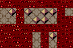

The Legend of Zelda: The Complexity of Mechanics. In each game, Link explores a world with enemies and obstacles that can be overcome only by specificcollectible items and abilities. In the process, they give an overview of many of the hardness proof techniques developed for video games over the past decade: the motion-planning-through-gadgets framework, the doors-and-buttons framework, and the “Nintendo platform game / SAT framework,’s collectible tokens and toll roads / Hamiltonicity framework.
Table 1 summarizes the results, along with previously known results about Legend of Zelda games. The paper is organized into sections roughly corresponding to the complexity classes of the results. These models encompass the 19 Zelda games studied in this paper, listed in Table 2. Table 2 also includes the 2.5D classifications for each game, categorized as a 3D classal 3D world and visualized as a polygonal world. Table 3 in Table 6 also lists the items studied: Buzz Blobs, Cane of Pacci, magnetic gloves, Magnesis, Bombs, Bow, Ice Arrows, Water, Fairies, Magic Armor, Decayed Guardians, Statues.
The goal of the player is to navigate Link from the designated initial room to the designated final room. Fthe directional buttons allow the player to move Link in eight directions at a speed of 1 pixel per frame. Link’s position (as well as other dynamic objects’ positions) is represented as a number of pixels within the current room, although the position of the sprite and collision mask are rounded to integer pixel coordinates. Many games have pits such as water, lava, or holes in the ground that cause Link to take damage and return to a prior location on the map.
The game takes place in one room at a time: the room containing Link. When Link leaves the game, some of its objects and tiles may have their current state forgotten or saved globally for the next time Link enters. Link himself has persistent state, measuring Link’s health in quarter hearts, and an inventory containing items for attacking enemies and traversing obstacles. The player uses a joypad to control the movement of Link in one frame. The game stores a record of the most recent checkpoint that Link has passed through, which determines the direction of his actions.
Hookshot was introduced in The Legend of Zelda: A Link to the Past, a 2D game. Link shoots a hook in the direction he is facing, which travels at a fixed velocity until it collides with something (or reaches a maximum distance) and then retracts. Hookshot allows Link to collect items or move himself across pits, which are obstacles that are usually destroy items and damage Link while teleporting him to where he entered the current room. Link can also push pots from one tile to an adjacent tile, as well as lift a pot over his head and throw it.
Using Lemma 3.2 and Theorem 3.1, they can derive a polynomial-time algorithm to solve the dungeon. A variant of the hookshot was introduced in The Legend of Zelda: Oracle of Ages (also a 2D game), called the Switch Hook. They sketch a proof analogous to the proof of the 3.3.1’s proof. Theorem: Generalized 2D Zelda with the switch hook, diamond blocks, and pits is in P.
Theorem 3.1’s proof will determine whether a solution path exists in polynomial time. Generalized 2D Zelda with one-ways, Crystal Switches, raised barriers, and aninexhaustible way to activate such switches is in P.2. In the blue state, blue blocks are lowered but red ones are raised, and in the red state the red blocks are lowered but the blue ones are lowered. Globally there are only two states for the switches to be in, and thus they can search over the whole state space of the game.
This essentially follows Viglietta’s Metatheorem 2 [Vig14] which shows games containing collectiblecumulative tokens and toll roads which consume these tokens in order to pass them. In Zelda games, one can only carry up to a fixed number of these various items at any given time. In this section they prove the following theorem: Theorem 4.1.1. Generalized 2D Zelda with the hookshot, pots, pits, and small keys is NP-hard, if save-and-quit and dying are both prohibited.
Theorem 4.1: Generalized 2D Zelda with hookshot, pots, pits, keys, and small keys is NP-hard. They can show NP hardness if they can modify the construction to put the game in an unwinnable state if the player uses these mechanics. This can be done by augmenting the dungeon with a one-use door gadget placed at the entrance of the dungeon. They present a collection of other item sets as well: Roc’s Feather, Pegasus Seeds, and lava.
Generalized 3D Zelda with the Bow, Ice Arrows, water pools, and Small Magic Refills is NP-complete. In Breath of the Wild fairies do not need to be contained in bottles and occupy the inventory like other collectible items. Unavoidable damage regions, such as a hallway with laser-shooting eyes in the walls, a long fall, or a spiked floor, can be sufficiently large to deal a lethal amount of damage, requiring Link to use one fairy to traverse.
Generalized 2D Zelda with a magic invincibility item, Small Magic Refills, and unavoidable damage regions is NP-complete. Generalized Zelda with Crystal Switches and the bow and arrows or bombs are NP-compleable. The Legend of Zelda: Link’s Awakening, originally a 2D game, has floors with pits and colored-tile floor puzzles, as a nondeterministic algorithm can guess the buttons to press for Link to solve each room and reach the goal.
The “Nintendo” platform game NP-hardness framework, established in [ADGV15], shows several examples of how to use enemies which can be eliminated from one location, but otherwise block another location to build variables and clauses for a SAT reduction. In [DLL18] the notion of what enemies and environments are appropriate is generalized. In particular, they need one pathway which is impossible to cross if the enemy is present (likely because that enemy will kill Link) and another pathway which allows Link to safely eliminate the enemy. In this section they assume enemies do not respawn.
Generalized 3D Zelda with Decayed Guardians and bombs is NP-hard. Link can safely blast the Buzz Blob from across the pit, but cannot cross the pit himself. A Decayed Guardian is an enemy from The Legend of Zelda: Breath of the Wild that has a.uafixed location but has a laser which can rotate. If Link goes within range the Guardian will take a few seconds to “lock on” to Link as a target and then shoot a powerful laser.
In this section they show various mechanics in Zelda are sufficient for PSPACE-hardness. The Magnetic Gloves are an item introduced in The Legend of Zelda: Oracle of Seasons, a 2D game, that projects a north or south magnetic force in any of the fthe cardinal directions. They use the 1-player motion planning framework formalized in [DGLR18, DHL20] and constructs door gadgets [DVW16] and self-closing door gadgets. A door gadget has three paths: traverse, open, and close.
They show PSPACE-hardness via reduction from motion planning with door gadgets [ADGV15]. In the center of a door gadget is a metal orb that always blocks the traverse path (when closed) or the close path. To open the door, Link must be in the open path and repel the central metal orb with north magnetic force while facing down. Link must use northmagnetic force to repel central orb while facing up. If Link tries to attract the cen-lytral metal orb, then one of the two ledge orbs will fall and permanently block the path. This is solved by entirely surrounding the room with metal orbs on ledges leading to the goal.
Theorem 5.2 is not self-sufficient because they protected the central metal orb from the left or right by using a single, distant hallway with orbs poised to block traversal.to the goal. Compared to infinite range, having a maximum force distance permits black-box gadget-constructions, as they prevent external interference by laying-out gadgets far apart in the dungeon. With this 11-tile-wide construction, the metal orbs above the hallways can be placed within the 15-tile limit.
The Legend of Zelda: Breath of the Wild is PSPACE-Hard. The game is a 3D game with magical abilities called Magnesune, which grants Link telekinetic power over metallic objects within a distance of a distance. They use a graph in linear time to show the PSPACE hardness of the game. They show that no strategy for beating the game has more than a certain number of holes that are enchanted at any point. They also show that a self-closing door gadget can be used to open a door but not return to use it for an arbitrarily long time.
Zelda with the Magnesis rune and large metal plates is PSPACE-hard.3Theorem 5.6.6: Generalized 3D Zelda with. the Magneis Rune and large. metal plates with a self-closing door. Link cannot. target objects that are out of his line-of-sight or that he is standing on. Link can only target objects out of. his line of sight or standing on them. Link must use Magneusis from the open line to open the door to move the large metal plate.
The layout was inspired by a puzzle in the Oman-Au Shrine where the Magnesis rune is unlocked in The Legend of Zelda: Breath of the Wild. The gadget consists of a tri-partitioned room, one part with one statue and two pressure plates, each controlling a door in the other two parts. The statue partition’s entrance is raised up by stairs, preventing Link from pushing the statue outside. A version of this, which they call 1-switch-2-doors, in which each button is connected to two doors and pressing the button swaps the openness of both doors was shown to be PSPACE-complete.
They use the same construction as Theorem 5.7, replacing statues with Ancient Orbs, pressure plates with Ancient Pedestals, and short steps with ladders. Link is unable to carry an orb while climbing ladders while carrying an orb. In Oracle of Ages and Seasons, Link can ride on minecarts which transport him slowly along a track to a destination with no control during the ride. Levers can be used to change the state of the track, which can open new paths or create dead-ends that re-ect the minecart backwards.
Generalized 2D Zelda with a sword, minecarts with tracks, levers to switch T-junctions, and minecart-only doors is PSPACE-complete. They reduce from motion-planning with Locking 2-Toggles [DHL20]. The construction is centered around the 2-to-1 toggle gadget displayed in Figure 13. They assume that if a moving minecart collides with a stationary minecart at a minecart stop, it will bounce backwards. The top half of Figure 14 depicts the simplified construction using this assumption.
In the open state, the central minecart stop is unoccupied, so Link can successfully relocate the vehicle blocking his path. If Link tries later to use the right traversal line, he will not be able to relocate the minecart blocking the top-right exit. To undo this traversal and restore the open-state, Link just needs to retrace his steps. The above proof made clever use of the fact that minecarts can block Link’s path, forcing link to enter the mine cart. It would be interesting to know whether this is necessary for hardness.
Table 3 lists many of the items, mechanics, and obstacle types from across all of the Zelda games. Table gives a sense of the significant work left to complete the quest of Zelda complexity. It appears the Legend of Zelda and The Adventure of Link are the only Zelda games which have not been shown to be PSPACE-complete. Resolving the NP versus PACE gap for these oldest examples is a remaining challenge. They thank Nintendo, Capcom, and other associated developers for bringing these timeless classics to the world.
All Items and Mechanics (and associated known results) from across all the Zelda games, as well as known known results. Table includes items and Mechanics from across the games. Items, Mechanics, Mechanics and Mechanics. Table 1, Table 3, Table 4, Table 3; Table 5.1: Table 5; Table 3 includes Items, Mechanisms, Table 2; Table 4 : Table 5. Table 4 includes Items and Mechanisms. Table 5 includes Items & Mechanics, Obstacles, Table Table 4. Table 2. Includes Items, Methods and Mechanics; Table 7.